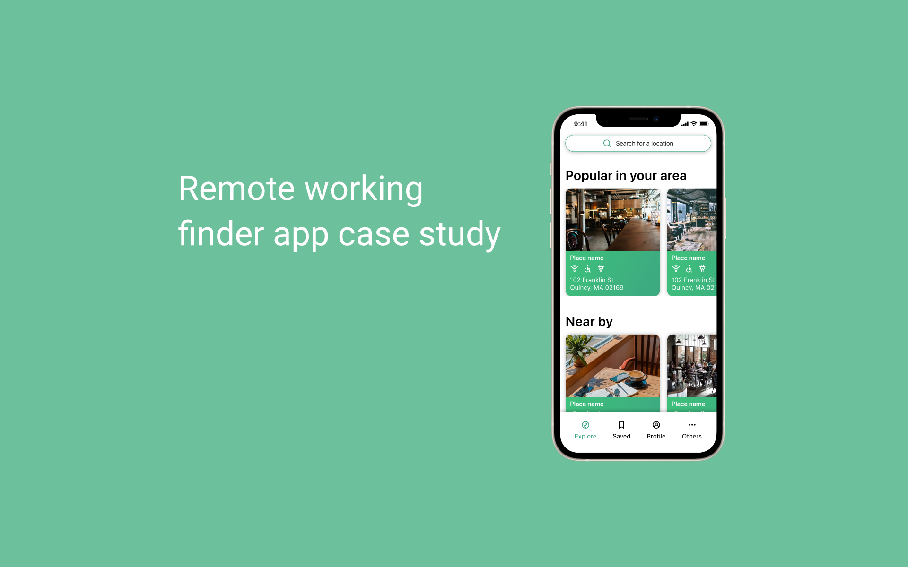

PostUp, a remote working location finder application
My role
- UX Reseacher
- UI Designer
- UI Prototype
Tools
- Pen & paper
- Figma
Duration
1 week
Summary
Design Sprints are the primary method for kickstarting projects big and small at Google. The time-boxed process helps teams solve critical business challenges through designing, prototyping, and testing ideas with real human customers. “A Design Sprint gives you a sense of power, creativity, and infinite possibilities,”
PostUp is a new startup that wants to help remote workers find great coffee shops and public places to work from. Users will be charged a $5.00 monthly fee in exchange to access PostUp information.
PostUp app is designed to help remote workers find suitable locations to work from, such as cafes, coworking spaces, libraries, and other locations. The app provides relevant information on each location, such as Wi-Fi availability, power outlets, noise level, and ratings and reviews from other users, to help remote workers make informed decisions on where to work.
Problem
Remote workers often struggle to find locations with the right environment and amenities to work from. This can include a lack of Wi-Fi connectivity, inadequate power outlets, or noisy surroundings, which can hinder productivity and cause stress.
Research
By combining primary data and secondary data research from PostUp and my research, the results showed that remote workers value locations with:
- Wifi
- Quiet places/not too crowded
- Bathroom
- Power outlets
- Can find a place by location
- Places that are friendly for remote workers
- Want to see photos of places while searching
User map
Lightning demo
There are not many direct solutions for remote workers to find coffee shops to work at. Most rely on Google maps or Apple Maps to find a place to work. However, the process is not good enough. There are some apps that provide similar solutions. However, they do not work as expected or have not been updated for years.
Crazy 8s exercise
After I generated my ideas from the previous phases, I picked one screen that I think is the most important for this project and fast sketching for eight variations. I believe users want to see places when they search for their ideal remote working places. That is the starting point of their task when they use the app. My goal was to explore and push beyond the initial ideal and generate a wide range of solutions.

Prototype
Settling down with my direction from the Crazy 8s step, my next step was to develop a prototype for this project. The main goal of this step is to design screens that will help users complete their task of finding a coffee shop for remote working, from the moment they enter the app until they find a coffee shop.


Testing and Validating
I interviewed five participants. Participants were students and remote workers. It was a very interesting process for this project. The app solved the main problem that was set out initially. At the beginning of each test, I introduced participants to the project and gave them an overview of the project, and the goal of the test. The biggest point was that all participants thought the app was very clear and easy to navigate around. There was also a lot of room to improve for this project. For example, the list of coffee shops shown on the map could show more information instead of just pictures and the name of the places. Another comment was the distance in the filter list that could be adjusted for min and max distance instead of just 1mi, 5mi, or 25 mi.
Key takeaways
Due to the nature of the Design Sprint project's time limit, the goal of this project is to identify and focus on solving problems. By involving users in the design process, teams can gain valuable feedback and insights to inform their design decisions, resulting in more user-centered solutions. The fast-paced and low-stakes environment of Google Design Sprint encourages me to take risks and try new ideas, even if they fail. I can then learn from my failures and iterate on better solutions in future projects.